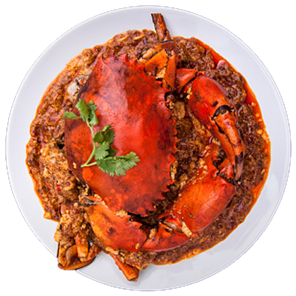

Everyone’s least favourite recipe
Very peculiar
CRAP’ TACULAR
7 days
100000 calories
 Expert
Expert
Expert
Ingredients
- 1 whole crab
- ¼ cup extra virgin olive oil
- 1 medium yellow or white onion, chopped aggressively
- 4 cloves garlic
- 2 tbsp tomato paste from the back of the fridge
- 1 can of questionable chili sauce
- 3 tbsp heavy butter (accounting for 94,000 of the calories)
- 1 cup mystery brown
- 2 tbsp fermented shrimp paste (for structural integrity)
- 1 egg, beaten like it owes you money
- 1 tsp MSG
- Salt and black pepper to taste
- 1 singular sprig of cilantro
- 1 fire extinguisher (nearby)
